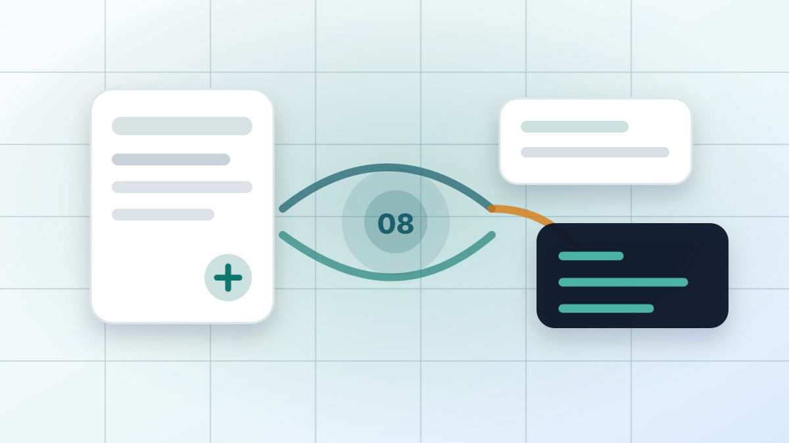

Extracting and Chunking Text
Text extraction lives in RAG.Core/Services/TextExtractor.cs.

The default chunk settings
"Ingestion": {
"ChunkTokenCount": 800,
"ChunkOverlapTokens": 100
}Text extraction lives in RAG.Core/Services/TextExtractor.cs.
For TXT files, extraction is a direct UTF-8 read. For PDFs, the project uses PdfPig to extract page text. PDF text extraction is imperfect because PDFs are layout documents, not semantic text documents. That is why citations include page numbers when available, but the extracted text may contain odd spacing or artifacts.
Production note: extraction and chunking are intentionally straightforward and materialize full files, extracted text, token lists, chunks, and embeddings in memory. That can become expensive or unstable with large files even when the upload is under the configured byte limit. A production pipeline would stream where possible, enforce extracted-text and token caps, and batch embedding/vector writes. This repository keeps the simple implementation because the goal is learning the flow, not production hardening.
Chunking lives in RAG.Core/Services/TextChunker.cs.
The default ingestion settings are:
{
"ChunkTokenCount": 800,
"ChunkOverlapTokens": 100
}The tokenizer is approximate, but the design goal is clear: produce chunks that are large enough to contain useful context and small enough to fit many chunks into an LLM prompt.
The code now makes that approximation explicit through ITokenEstimator. The default ApproximateTokenEstimator splits on whitespace; it is not the tokenizer used by Gemini, Ollama, or any embedding provider. That naming matters because ChunkTokenCount is an engineering control, not a guarantee that the provider sees exactly 800 model tokens.
public interface ITokenEstimator
{
IReadOnlyList<string> EstimateTokens(string text);
}Overlap helps preserve continuity. If an important sentence falls near a boundary, overlap gives nearby chunks a chance to retain enough surrounding context.
Note: 800 and 100 are starting values, not magic numbers. A ChunkTokenCount of 800 gives each embedded chunk enough room for paragraph-level context, which helps literary questions that depend on surrounding evidence. A smaller value such as 400 can improve pinpoint retrieval for short factual passages, but it creates more chunks, more embedding calls, more vector rows, and more chances to split related ideas apart. ChunkOverlapTokens is 100, or 12.5% of the chunk size, so adjacent chunks share enough context without duplicating too much text. In practice, overlap is often tuned as a ratio, commonly around 10-20%, then adjusted for the document type and observed answer quality.
The main limiting factors are the embedding model input limit, the chat model context window, retrieval count, latency, storage, and cost. Larger chunks reduce indexing volume but can make search results less precise. Smaller chunks improve precision but require retrieving more chunks to answer broader questions. More overlap preserves continuity but increases duplicate embeddings and vector storage. The right values should be measured against the questions the system needs to answer.
A provider-specific tokenizer would be a future improvement, but the current seam is already useful: tests can lock down chunk behavior, and a later tokenizer can replace the estimator without rewriting ingestion.